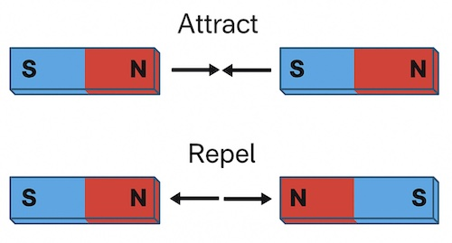

Laws of Magnetism
Properties of Magnets
A magnet is an object that produces a magnetic field and can attract magnetic materials like iron, cobalt, and nickel. These are the properties of a magnet:
- Two poles: Every magnet has a north and a south pole located at its ends. There is no isolated magnetic pole.
- Like poles repel: North–north or south–south poles push away from each other.
- Unlike poles attract: North–south poles pull toward each other.

- Fields stronger at poles: The magnetic field is strongest near the poles and weaker farther away.
- Field vector addition: Magnetic field vectors can add up to obtain a new vector that is equal to the sum of the two or more vectors.
- Alignment with Earth: If freely suspended, a magnet aligns with the Earth's magnetic field, pointing north–south.
- Attraction of magnetic materials: Magnets attract ferromagnetic materials (iron, cobalt, nickel, steel), but do not affect non‑magnetic materials like plastic or wood.
Note: Only magnets can repel one another—this is the only sure way to identify a magnet!